UDE 料號查詢自動化平台
以 n8n 為核心打造企業內部料號查詢與資料整合平台，整合 MySQL、Excel 與即時查詢介面，
將原本繁瑣的人工查詢 / 比對流程自動化。
Featured Project
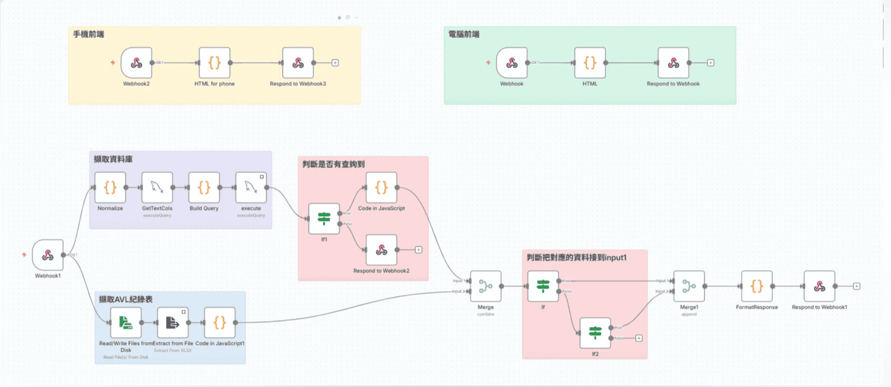
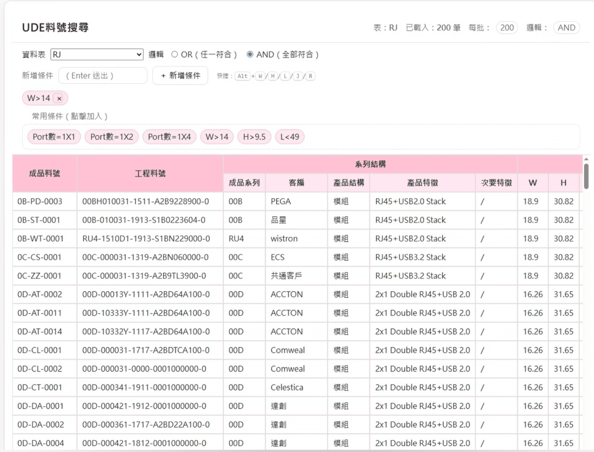
n8n
MySQL
JavaScript Function Node
HTML + DataTables
Workflow Automation
Internal Tool
- 解決人工查詢 Excel 與資料庫、手動比對料號與欄位資料的低效率流程。
- 透過欄位正規化與 join key 機制，自動比對並同步更新資料，降低重工與資料不一致問題。
- 以前端即時查詢介面提升內部操作效率與使用體驗。
- 針對大資料量執行調整系統參數，改善效能瓶頸。
成果：
減少人工查詢與比對時間約 90%，提升資料一致性，並建立可擴充的企業內部查詢工具。
企業內部系統，未公開原始碼
AI Nutritionist
整合熱量分析、圖片分析與 AI 飲食教練三種介面，將健康查詢、熱量估算與飲食規劃集中在同一套系統中。
AI Health App
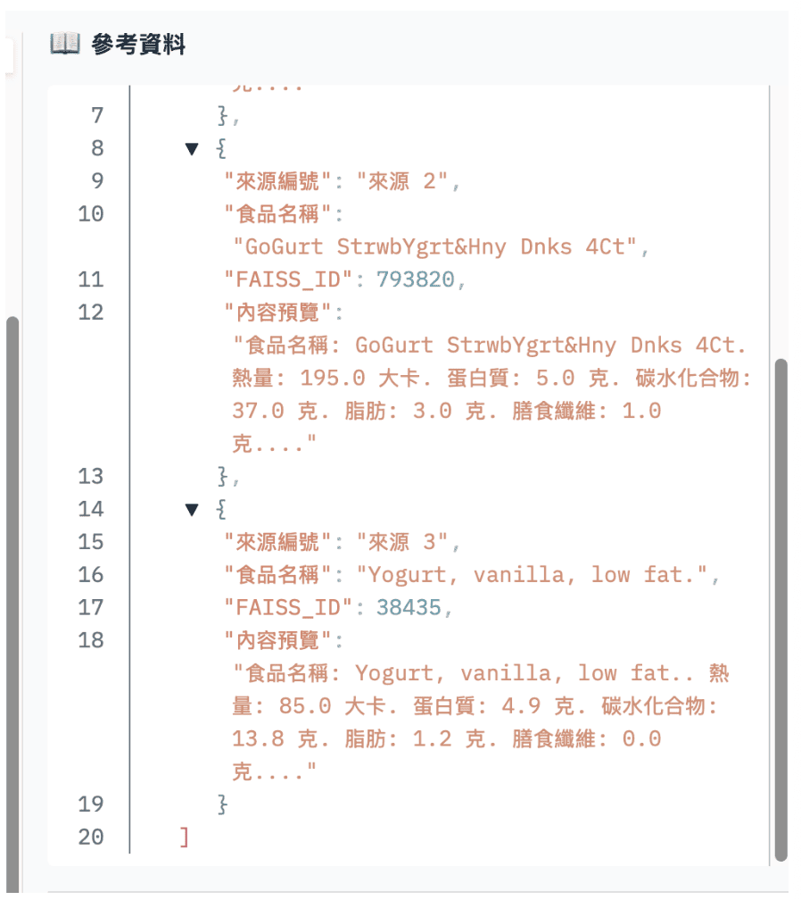
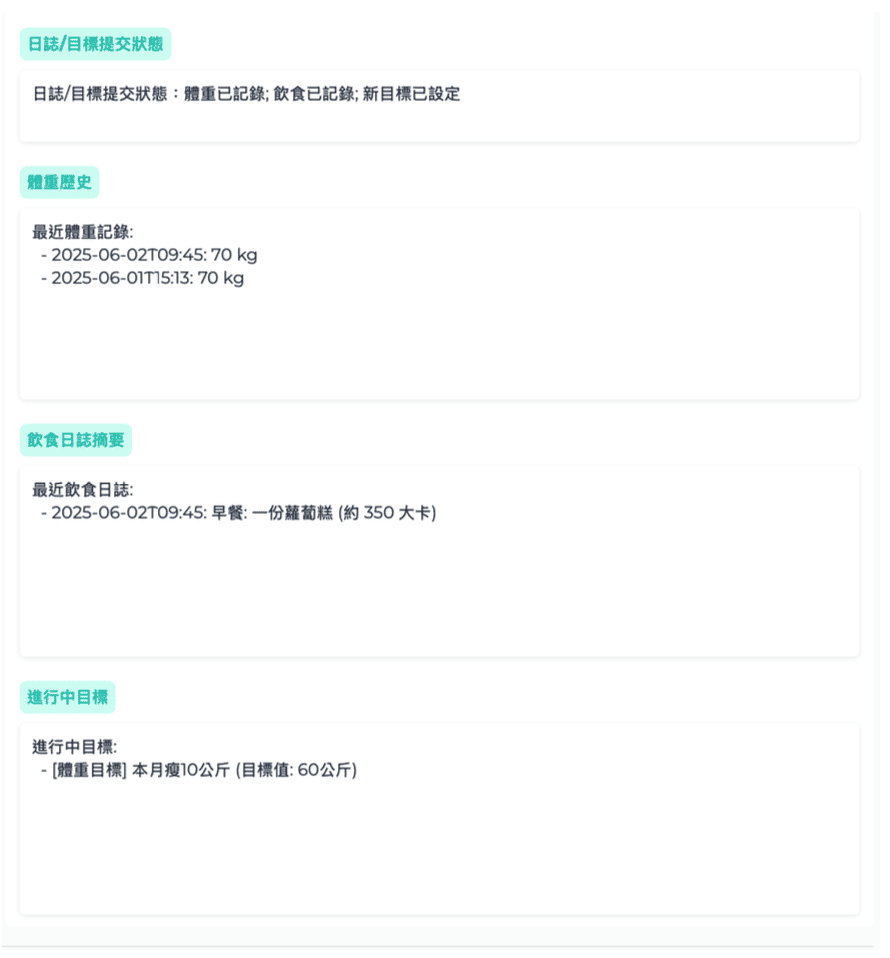
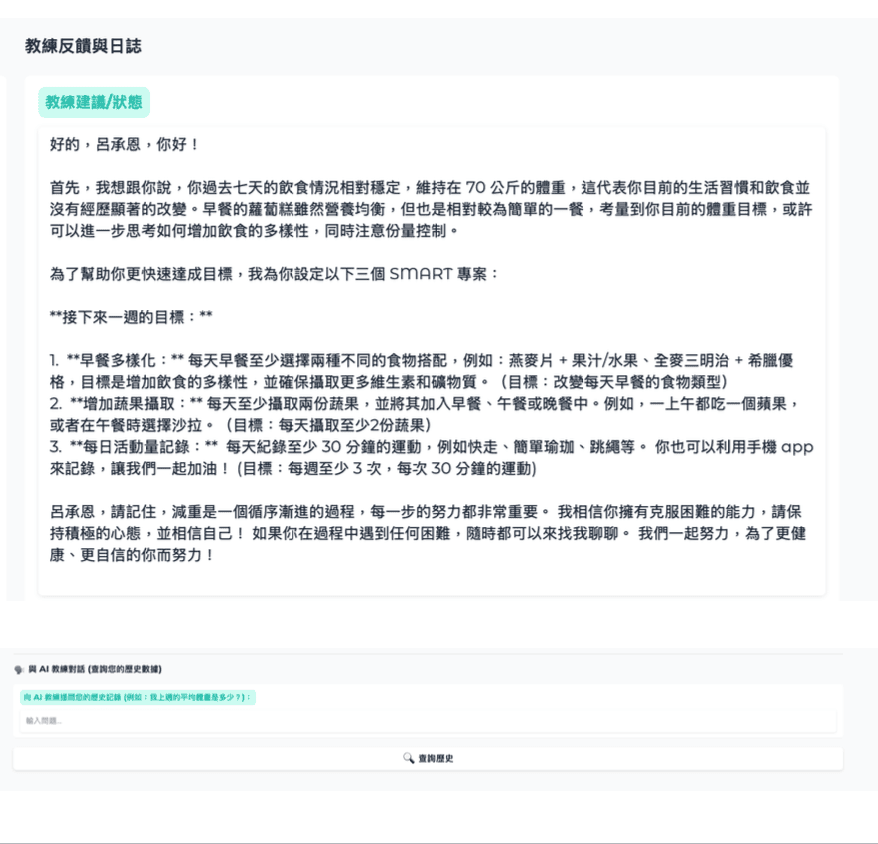
Python
LLM
RAG
Nutrition Analysis
Image Analysis
Health Coaching
- 整合 文字熱量分析、上傳照片分析熱量、AI 飲食教練 三大功能。
- 減少大多數人反覆搜尋食物熱量資料的時間，並把多來源資訊整合到同一個系統。
- 降低使用者對人工營養規劃的依賴，讓健康管理更容易開始。
- 讓使用者可透過單一程式完成熱量估算、飲食紀錄與 AI 飲食建議。
價值：
把零散的健康資訊整合成可持續使用的工具，降低查詢成本並提升日常使用效率。
CakeHunt｜多平台自動化搶票系統
我設計的多帳號同時搶票程式，將整個搶票流程交由系統自動執行，並整合 OCR 驗證碼辨識與即時監控功能。
Automation Tool
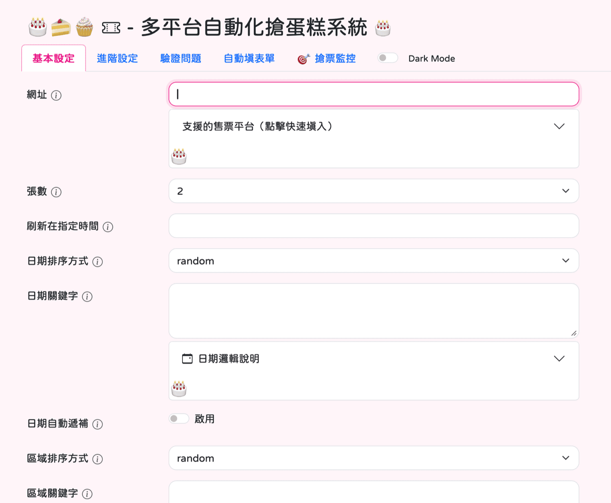
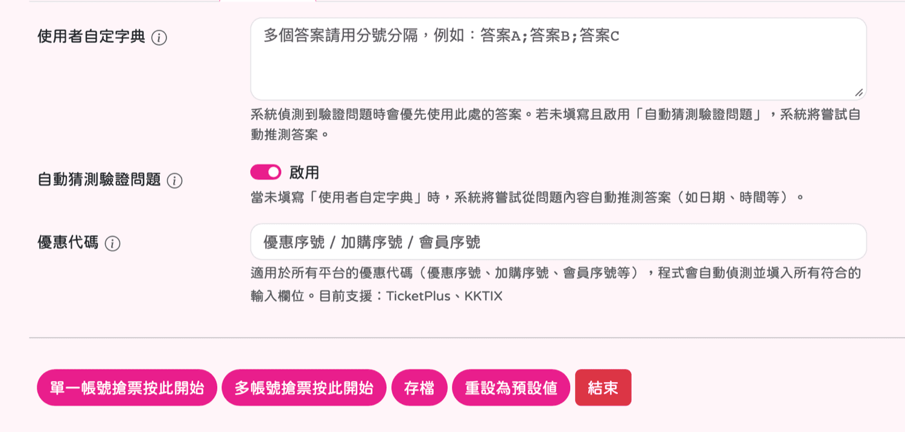
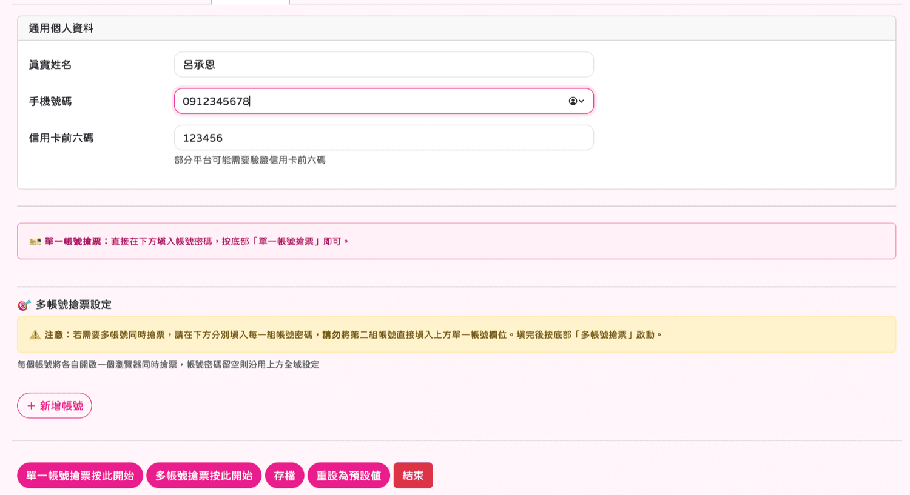
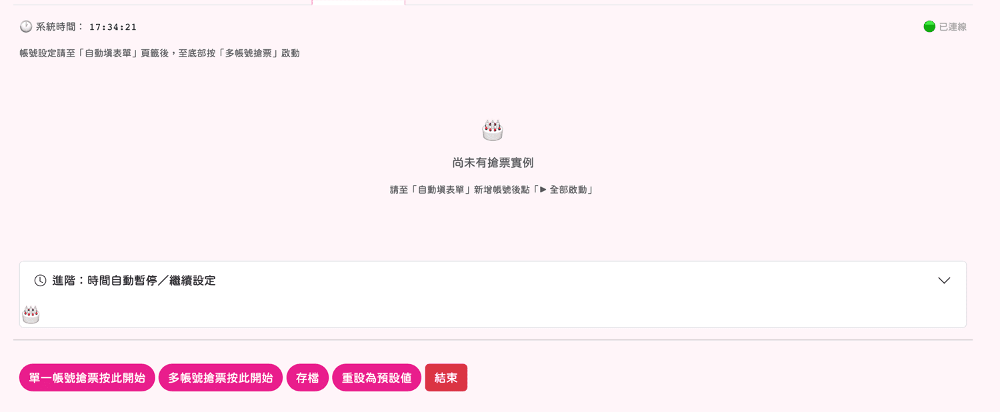
Automation
OCR
CAPTCHA Recognition
Multi-Account Workflow
Real-Time Monitoring
- 將原本高度依賴人工操作的搶票流程自動化，降低手動刷新、填表與反覆輸入的負擔。
- 支援 多帳號同時執行，提高整體搶票效率。
- 整合 即時監控系統，可觀察每個帳號的搶票進度。
- 結合 OCR 驗證碼辨識 與自動填入，大幅減少人工操作時間並提升成功率。
成果：
將搶票從高壓手動流程轉成自動化工具，大幅降低人工介入成本並提升整體成功機率。
line-cloud-webhook｜CareBuddy 健康陪伴機器人
一個串接進 LINE 的健康陪伴機器人。若最近常常有小疾病，可透過它來記錄症狀、自動寫入資料庫並獲得即時回覆。
LINE Bot / Health Record
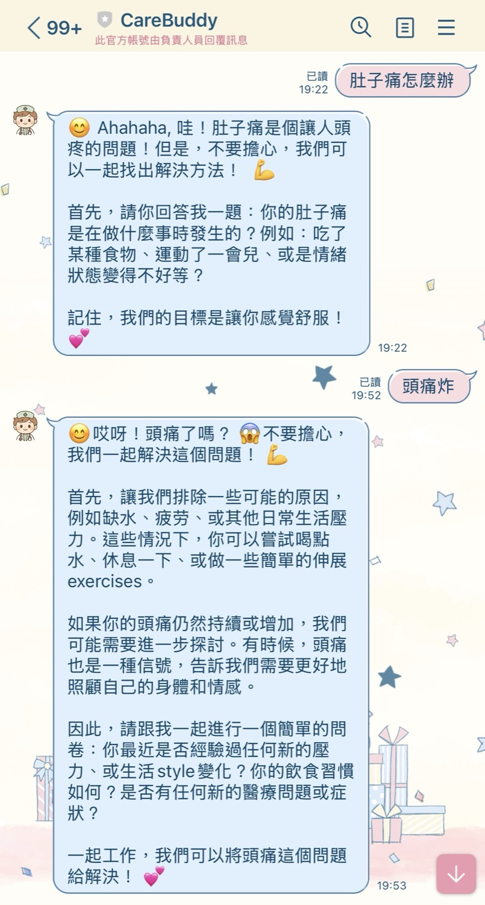
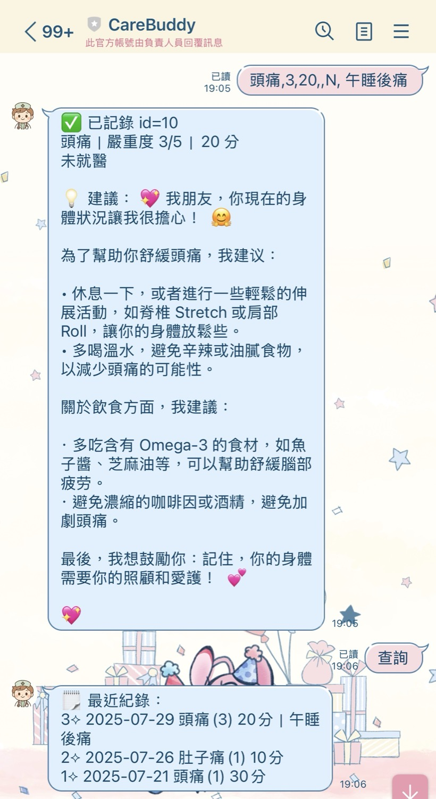
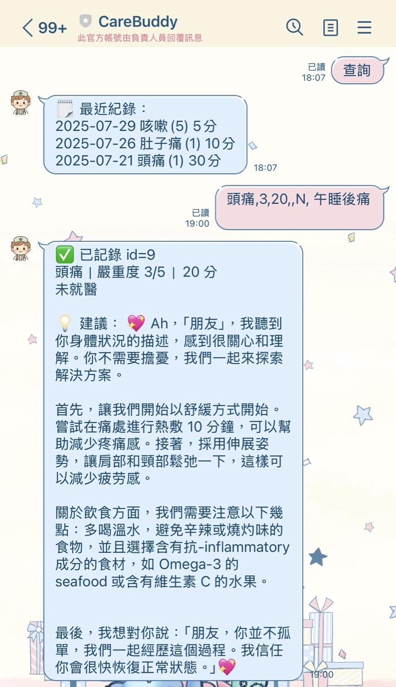
LINE Integration
Webhook
CRUD
Health Record
Backend Logic
Database
- 具備健康紀錄的 CRUD 功能，可透過 LINE 對話自然完成資料新增、查詢與管理。
- 系統會自動儲存症狀到資料庫，降低手動紀錄成本。
- 提供症狀的即時回覆，不會亂下醫囑；若情況嚴重則建議就醫。
- 主打一種 陪伴感與心靈安慰，像是當你不舒服時身邊有個會回應你的小貼心。
價值：
將健康紀錄與即時回覆整合進日常聊天場景中，降低門檻，讓健康管理變得更自然、更願意持續使用。
LLM Order Extraction Thesis
研究大型語言模型於異質訂單文件之關鍵資訊擷取與標準化，建立從文件解析、prompt 設計到評估分析的完整流程。
Research / AI
Python
LLM
Prompt Engineering
JSON Schema
OCR
Evaluation
- 處理異質訂單中欄位名稱變異、資訊分散、格式複雜與干擾資訊過多等問題。
- 建立結構化 schema 與標準化輸出流程，使模型結果可比較、可分析、可重現。
- Level 2 正式結果達 95.2% Document Accuracy。
- 進一步延伸至 Level 3 OCR / 影像版本，降低人工整理非結構化文件的成本。
成果：
將原本格式多變的非結構化訂單內容轉為標準化 JSON，為企業文件處理與後續系統串接建立基礎。